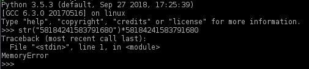
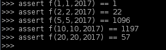
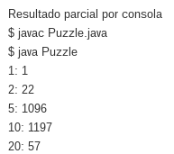
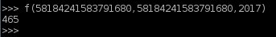

Lo que hace el programa original es tomar un numero (long int) n y concatenarlo a si mismo iterativamente mediante un for loop la cantidad de veces indicada por n almacenandolo en la variable s (si tomamos 10 como ejemplo el valor de s cuando finalice el loop seria 10101010101010101010), y a ese numero, se le calcula el modulo 2017, que es seria el resto del numero cuando es dividido por 2017.
Así que lo que tendriamos que hacer es encontrar el modulo en 2017 del numero 58184241583791680 concatenado asi mismo 58184241583791680 veces, cosa que es imposible utilizando la logica del programa original en una computadora promedio actual.
Sabemos que el número que estamos buscando está en el rango de valores entre 0 y 2016, debido a que el resultado de un número mod n siempre oscilara entre el 0-n por definición. Notese que con los valores del modulo de un numero siendo concatenado al resultado de la concatenación anterior nos muestra un patrón como se observa en la imagen.
En base a la función:
A su vez notamos que en cada concatenacion el resultado es distinto al primer numero que obtenemos, asi que podemos deducir que cuando este numero se repita, habremos encontrado el patron de resultados de las concatenaciones.
Por razones de simplicidad voy a usar Python para escribir la solución.
Finalmente, dada la cantidad de repeticiones(concatenaciones) requeridas del numero, podemos encontrar el indice del patron en el cual se encontrara el resultado final (restandole 1 ya que las list de python comienzan en 0).
Ejecutamos los ejemplos:
Comparamos con los del programa original:
Finalmente, encontramos la solución al desafío:
465
